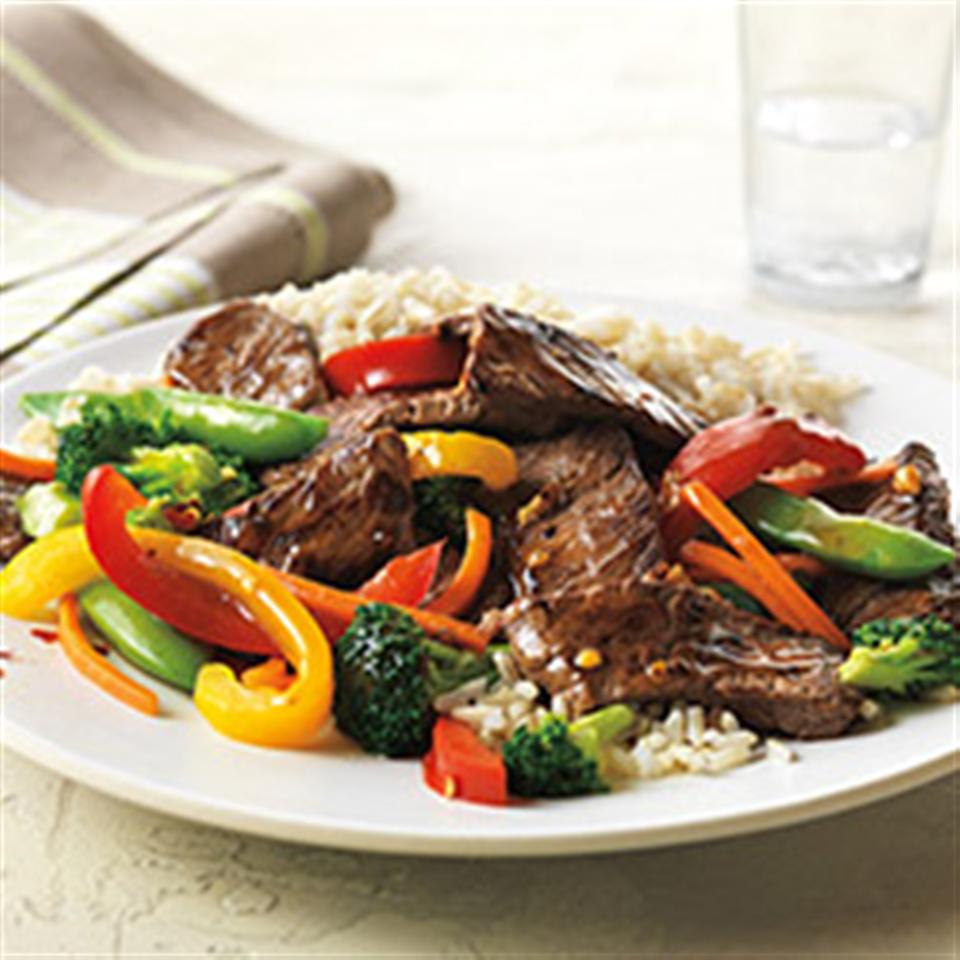

Stir Fry

Description
The Asian Beef & Vegetable Stir-Fry is a delicious blend of savory flavors.
Use lean beef to make this meal a quick and healthy option for any day of the week!
Ingredients
- 1 pound beef top sirloin steak boneless, cut 1 inch thick
- 4 cups assorted fresh vegetables
- 1 clove garlic, minced
- 1/2 cup prepared stir-fry sauce
- 1/8 teaspoon crushed red pepper, or to taste
- 2 cups hot cooked rice
- 2 tablespoons unsalted dry-roasted peanuts (Optional)
Steps
- Cut beef steak lengthwise in half, then crosswise into 1/4-inch thick strips.
- Combine vegetables and 3 tablespoons water in large nonstick skillet. Cover and cook over medium-high heat 4 minutes or until crisp-tender. Remove and drain.
- Heat same pan over medium-high heat until hot. Add half of beef and half of garlic; stir-fry 1 to 2 minutes or until outside surface of beef is no longer pink. Remove. Repeat with remaining beef and garlic.
- Return all beef and vegetables to pan. Add stir-fry sauce and crushed red pepper; heat through. Serve over rice. Sprinkle with peanuts, if desired.